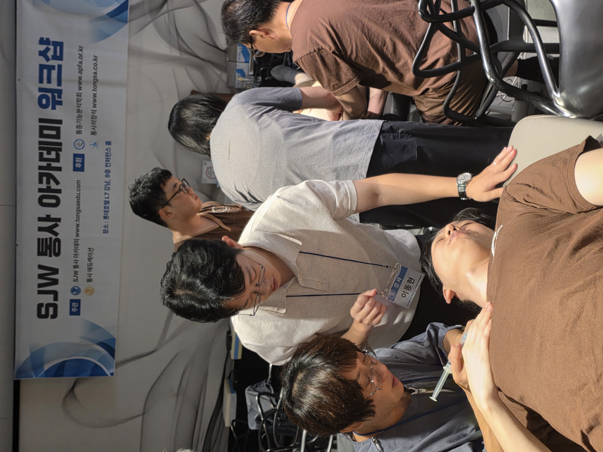
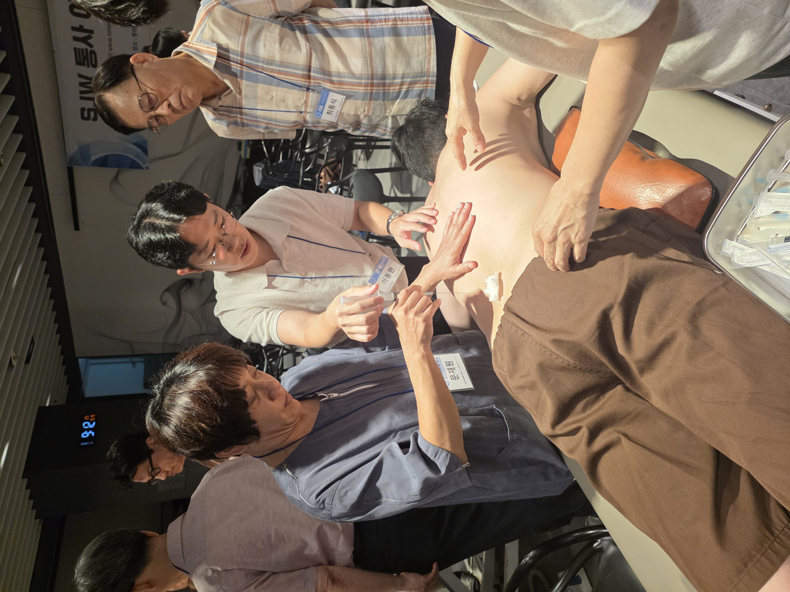
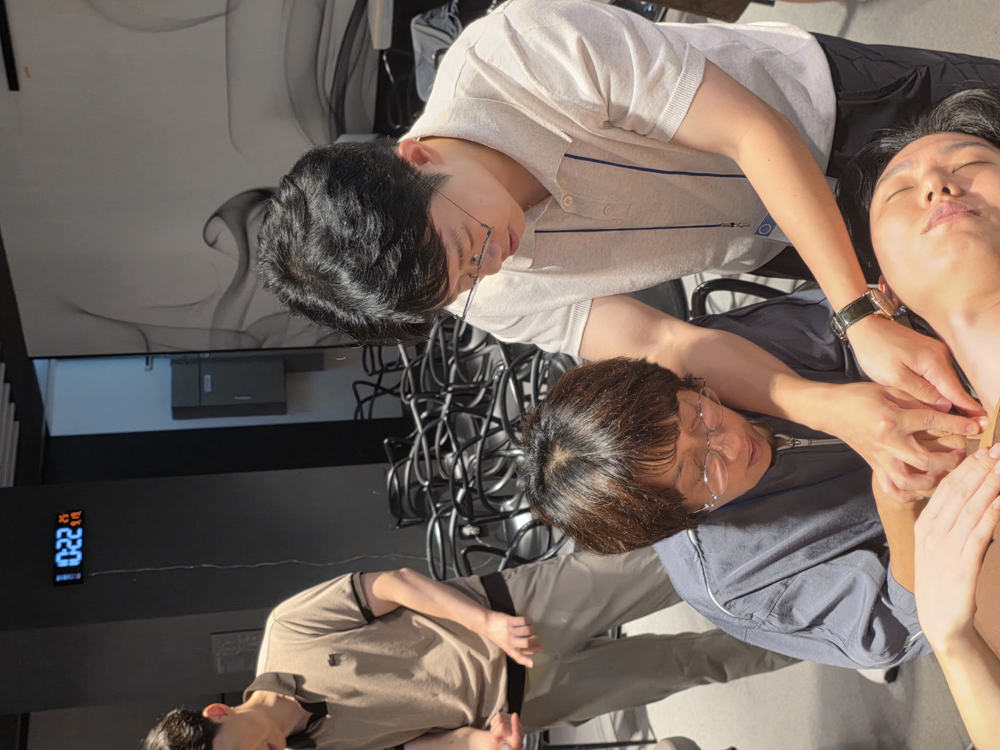

KakaoTalk_20260921_102345876.jpg
img/KakaoTalk_20260921_102345876.jpg
2,285 KB · 원본 크기로 보기 ↗요청하신 카카오톡 이미지 6개를 남겼습니다. 미사용 이미지 113개(약 87.5MB)는 삭제했습니다.
남겨 둔 이미지의 원래 경로와 파일 크기를 확인할 수 있습니다.
각 사진 아래에 원래 경로를 표시했습니다. 되돌리려면 restore.ps1을 실행하세요.

img/KakaoTalk_20260921_102345876.jpg
2,285 KB · 원본 크기로 보기 ↗img/KakaoTalk_20260921_102345876_01.jpg
2,544 KB · 원본 크기로 보기 ↗
img/KakaoTalk_20260921_102345876_02.jpg
2,940 KB · 원본 크기로 보기 ↗img/KakaoTalk_20260921_102345876_03.jpg
2,663 KB · 원본 크기로 보기 ↗
img/KakaoTalk_20260921_102345876_04.jpg
2,364 KB · 원본 크기로 보기 ↗img/KakaoTalk_20260921_102345876_05.jpg
2,639 KB · 원본 크기로 보기 ↗